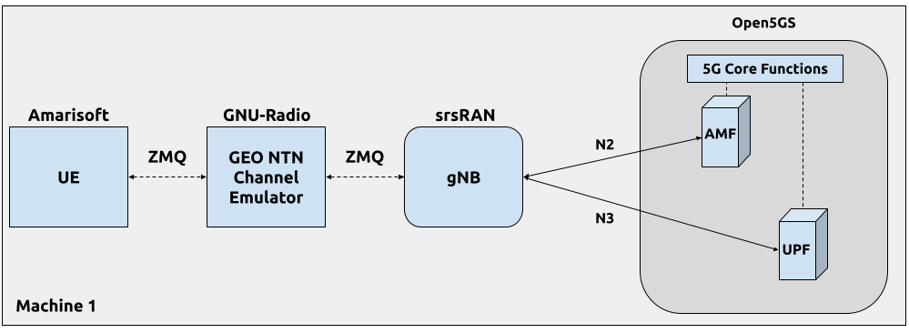

srsRAN gNB 适用于 5G NTN
概述
本教程演示如何使用 srsRAN Project 和带有 NTN 扩展的 Amarisoft UE 配置和运行 5G NR SA 非地面网络 (NTN)。 NTN 是一种网络部署，其中 gNB 和 UE 之间的通信通过非地面组件（例如卫星）进行中继。
由于与传统地面网络相比，链路动态和特性不同，部署 NTN 带来了独特的挑战。为了应对这些挑战，3GPP 在 5G NR 规范（版本 17）中引入了多项增强功能和功能。主要功能和增强功能包括：
频段和频谱分配： 适用于卫星通信的新频段已经标准化，以确保高容量链路。
时序调整和延迟管理： 已经引入了一些机制来处理与卫星通信相关的长期且可变的传播延迟。
多普勒频移补偿： 卫星的相对运动速度可达 27,000 公里/小时，会产生不可忽略的多普勒频移，必须对其进行补偿以维持可靠的通信链路。
在 3GPP NTN 中，UE 负责管理长传播延迟并补偿多普勒频移。为了实现这一点，gNB 广播一个新的 SIB19 块，其中包含 NTN 相关信息，包括卫星的当前位置。 UE 使用此信息来计算当前延迟和多普勒频率，并相应地调整其传输。
如需了解更多信息，您可以阅读以下文档：
我们的 NTN 实施支持全面的 NTN 场景，包括 GEO、MEO 和 LEO。 然而，MEO 和 LEO 场景需要能够模拟可变链路延迟和多普勒频移的高级 NTN 信道仿真器。
在本教程中，我们将重点关注 GEO 场景，其中 NTN 链路可以简化为 gNB 和 UE 之间的恒定延迟。这种方法足以演示 srsRAN-项目 gNB 的关键 NTN 功能。 我们使用 GNU Radio 实现了基本的 GEO NTN 通道模拟器，其中信号样本通过基于 ZMQ 的虚拟 RF 设备在所有组件（gNB、通道模拟器和 UE）之间传输。
下图展示了本应用笔记中使用的设置：

局限性
由于我们使用的是非常简单的 NTN 通道仿真器，因此本教程有以下限制：
仅基于 ZeroMQ 的设置： NTN 通道仿真器在 GNU Radio 中使用 ZMQ 套接字传输信号样本来实现。无线运行设置需要真正的 RF NTN 通道仿真器。
仅 GEO NTN 场景： 当前的 NTN 通道仿真器仅在 gNB 和 UE 之间引入固定延迟。实施 LEO 场景需要一个模拟延迟和多普勒频率的 NTN 信道仿真器。
此外，当前的 srsRAN-Project gNB 实现具有以下限制：
基于卫星的 gNB 放置： 本教程仅涵盖 gNB 位于卫星上的场景，这意味着没有馈线链路。
禁用 HARQ 重传： HARQ 重传当前已禁用。请注意，这是 NTN 标准中指定的有效选项。
硬件和软件概述
本应用笔记使用以下硬件和软件：
装有 Ubuntu 22.04.1 LTS 的电脑
srsRAN Project (24.04 或之后)
Amarisoft UE 支持 NTN (2023年12月15日或之后)
GNU 无线电伴侣 （用于 NTN 通道模拟器）
Amarisoft UE
Amarisoft UE 模拟器 (AmariUE) 是一款商业软件解决方案，专为 5G 网络的功能和性能测试而设计。 作为兼容的 LTE、NB-IOT 和 NR UE（用户设备），它可以在同一频谱内同时模拟多个 UE。 此外，Amarisoft UE 还可增强 NTN（非地面网络）功能。 欲了解更多详情，请参阅 阿玛瑞软件网站.
Open5GS
在本示例中，我们使用 Open5GS 作为 5G 内核。
Open5GS 是 5G 核心和 EPC 的 C 语言开源实现。以下链接将为您提供 包含下载和设置 Open5GS 所需的信息，以便可以与 srsRAN 一起使用：
对于本应用笔记，我们将使用 srsRAN Project 中提供的 Dockerized Open5GS 版本，网址为 srsgnb/docker.
GNU 无线电伴侣
GNU-Radio Companion 是一个免费的开源软件开发工具包，提供信号处理模块，可以将这些模块连接起来形成信号流图。 默认情况下，GNU-Radio Companion 包含 ZeroMQ (ZMQ) 兼容块，方便通过 TCP 套接字连接到外部进程。 这些模块能够将信号样本从外部进程传输到充当信号源/接收器的外部进程（此处为 gNB 和 AmarisoftUE）。
在本教程中，我们使用 GNU-Radio Companion 来实现 简单的 GEO NTN 通道模拟器，这会延迟 gNB 和 UE 之间的信号采样。
值得注意的是，GEO 卫星的高度波动，导致信号传播延迟和非零多普勒频率的变化。
然而，由于这些卫星的运动相对较慢，多普勒频率通常可以被忽略，而波动的延迟由 gNB 通过 MAC TA_CMD.
安装
零MQ
首先是安装 ZeroMQ 并构建 srsRAN。在Ubuntu上，可以安装ZeroMQ开发库 与：
sudo apt-get install libzmq3-dev
srsRAN Project
然后，您需要编译srsRAN Project（假设您已经安装了所有必需的依赖项）。
请注意，ZeroMQ 最初是停用的，在执行期间发生激活 cmake 命令，包含标志 -DENABLE_EXPORT=开 -DENABLE_ZEROMQ=ON。
具体来说，可以使用以下命令从源代码下载并构建 srsRAN Project：
git clone https://github.com/srsran/srsRAN_Project.git
cd srsRAN_Project
mkdir build
cd build
cmake ../ -DENABLE_EXPORT=ON -DENABLE_ZEROMQ=ON
make -j`nproc`
特别注意 cmake 控制台输出。确保您阅读以下行：
...
-- 发现 零MQ.
-- 检查 为了 模块 'ZeroMQ'
-- 否 包 'ZeroMQ' 发现
-- 找到了 libZEROMQ: /使用者/本地的/包括, /使用者/本地的/库/libzmq.所以
...
请注意，如果您在安装 ZMQ 和其他依赖项之前已经构建并安装了 srsRAN Project，则必须重新构建两者以确保正确识别 ZMQ 驱动程序。
Amarisoft UE
下载适当版本的 Amarisoft UE 并按照其安装指南中提供的步骤进行安装。
本教程使用 Amarisoft UE 2023-12-15 版本，但可以是 2023-12-15 以上的任何版本。
适用于 Amarisoft UE 的 ZeroMQ 驱动程序
注意事项
这些步骤只需完成 之后如上所述编译 srsRAN Project，因为它们需要 srsRAN Project 和 Amarisoft UHD RF 前端驱动程序的构建文件。
Amarisoft UE 与 srsRAN Project 的接口需要由 SRS 实现的自定义 TRX 驱动程序，该驱动程序可以在 srsRAN Project 源文件中找到 srsRAN_Project/utils/trx_srsran.
Amarisoft UE 发布文件夹，amarisoft.2023-12-15.tar.gz，应该包含一个名为 trx_uhd-linux-2023-12-15.tar.gz。在继续之前应解压缩发布文件夹和相关子文件。
首先，需要编译驱动程序，通过运行以下命令来完成此操作 srsRAN_项目/构建 :
cmake ../ -DENABLE_EXPORT=TRUE -DENABLE_ZEROMQ=TRUE -DENABLE_TRX_DRIVER=TRUE -DTRX_DRIVER_DIR=<PATH TO trx_uhd-linux-2023-12-15>
make trx_srsran_test
ctest -R trx_srsran_test
确保 CMake 找到该文件 trx_driver.h 在指定的文件夹中。 CMake 应打印以下内容：
-- Found trx_driver.h 在 TRX_驱动程序_目录=/home/user/amarisoft/2021-03-15/trx_uhd-linux-2021-03-15/trx_driver.h
必须为 UE 应用程序完成符号链接才能加载驱动程序。从 Amarisoft UE 构建文件夹中运行以下命令：
ln -s srsRAN_Project/build/utils/trx_srsran/libtrx_srsran.so trx_srsran.so
GNU 无线电伴侣
在Ubuntu上，可以使用以下命令安装：
须藤 适合-得到 安装 格努拉迪奥
配置
为本教程准备了以下配置文件：
以下各节概述了所做修改的重要细节。其余配置参数的描述可在 配置参考。 此外，基于 ZMQ 的设置的详细信息在 srsRAN gNB 与 Amarisoft UE 应用笔记。
建议您使用这些文件以避免手动更改配置时出现错误。此处未包含的任何配置文件都不需要修改默认设置。
gNB
当在 srsRAN-Project gNB 中使用基于 ZMQ 的 RF 驱动程序时，俄罗斯特别提款权 配置文件的各部分必须如下所示：
俄罗斯特别提款权:
设备驱动程序: 兹米克
设备参数: 发送端口=TCP协议://127.0.0.1:2000,接收端口=TCP协议://127.0.0.1:2001
斯拉特: 5.76
在 gNB 中启用 NTN 功能需要满足以下条件：
使用可用频段之一（此处
乐队： 256) 和 ARFCN（DL 和 SSB）禁用 HARQ 重传
使用前导码格式 1 来提高时序鲁棒性（此处
prach_config_index： 31)相应地调整周期和计时器以匹配 NTN 链路 RTT
启用 SIB 中的 SIB19 传输
添加
恩特恩配置部分，其中包含用于在 NTN 模式下配置 gNB 并填充 SIB19 的参数
最后， 单元格配置 NTN GEO场景的配置部分如下：
单元格配置:
dl_arfcn: 437000 # 下行载波的ARFCN（中心频率）。
乐队: 256 # 使用NTN频段。
信道带宽MHz: 5 # 带宽（MHz）。 PRB 的数量将自动导出。
通用_scs: 15 # 用于数据的子载波间隔（以 kHz 为单位）。
普鲁姆: "00101" # gNB 广播的 PLMN。
塔克: 7 # 追踪区号（需要匹配核心配置）。
PDSCH:
nof_harqs: 16 # 设置下行HARQ进程数。
max_nof_harq_retxs: 0 # 禁用HARQ重传。
普拉赫:
普拉赫配置索引: 31 # 使用Preamble Format 1 提高时序鲁棒性。
max_msg3_harq_retx: 0 # 禁止Msg3 HARQ重传。
同胞:
t300: 2000 # 以毫秒为单位延长RRC连接建立定时器。
t301: 2000 # 延长RRC连接重建定时器，单位为ms。
t311: 3000 # 延长RRC连接重建过程定时器，单位为ms。
t319: 2000 # 以毫秒为单位延长RRC连接恢复定时器。
si_窗口_长度: 40 # 设置 SI 窗口长度。
si_sched_info:
- si_周期: 16 # 设置SIB2周期。
同胞映射: 2 # 启用SIB2。
- si_周期: 16 # 设置SIB19周期。
同胞映射: 19 # 启用SIB19。
si_窗口_位置: 2 # 设置SIB19位置。
普奇:
sr_period_ms: 320 # 设置调度请求周期。
CSI:
CSI_RS_周期: 80 # 设置CSI-RS报告周期。
的 恩特恩 部分内容如下：
恩特恩:
细胞特定的偏移量: 239 # 特定于小区的 k 偏移量。
ta_common: 0 # TA 公共偏移量。
星历信息_ecef: # 位置和速度状态向量格式的卫星星历。
位置x: -28105880
位置y: 31509747
位置z: -1691895
vel_x: 34
速度: 9
vel_z: -385
最后，必须更新定时提前 (TA) 调度程序配置，以解决 GEO NTN 中较大的传播延迟。具体来说，重要的是要避免在 UE 应用前一个命令之前测量和发出新的 TA 命令。的 ta_sched_cfg 部分内容如下：
单元格配置:
sched_expert_cfg:
ta_sched_cfg:
ta_cmd_offset_threshold: 1 # 设置定时提前命令 (T_A) 偏移阈值，高于该阈值将触发定时提前命令。
ta_measurement_slot_period: 80 # 设置测量周期（以 nof 为单位）。计算新的定时提前命令的时隙。
ta_measurement_slot_prohibit_period: 250 # 设置发出 TA_CMD 和开始 TA 测量之间的时隙数延迟。
ta_目标: 0 # 设置定时提前目标，以TA为单位。
请注意 gnb_zmq.yml 文件包含基本（即通用）gNB 配置，而 NTN 相关参数在单独的文件中定义 geo_ntn.yml 文件。
Amari软件UE
在 AmarisoftUE 中使用基于 ZMQ 的 RF 驱动程序时， 射频驱动程序 AmarisoftUE 配置文件中的部分必须更改如下：
射频驱动程序: {
/* srsRAN-项目 兹米克 RF 装置 */
姓名: “srsran”,
日志级别: “信息”,
tx_端口0: “TCP://*:2101”,
接收端口0: “tcp://localhost:2100”,
},
在 UE 中启用 NTN 功能需要满足以下条件：
使用可用频段之一（此处
乐队： 256) 和 ARFCN（DL 和 SSB）设置
恩： 真实选项定义 UE 的接地位置
ntn_地面位置部分（此信息用于计算 NTN 卫星的相对距离和速度，然后用于计算 NTN 链路的延迟和多普勒频率）
最后， 细胞组 AmarisoftUE 配置中的部分如下：
细胞组: [{
组类型: “nr”,
多线程: 假的,
细胞: [{
射频端口: 0,
带宽: 5,
采样率: 5.76,
乐队: 256,
dl_nr_arfcn: 437000,
ssb_nr_arfcn: 437090,
ssb_子载波_间距: 15,
子载波间距: 15,
n_天线_dl: 1,
n_天线_ul: 1,
恩特恩: 真实,
ntn_地面位置: {
纬度: -2.2970186,
经度: 131.7327201,
海拔高度: 1
},
}],
NTN通道模拟器
简单的 GEO NTN 通道模拟器可以在这里下载：
下图显示了 GEO NTN 通道仿真器的 GNU-Radio 流程图：

上图负责处理下行链路信号样本，下图负责处理上行链路信号样本。
模拟器的工作原理如下：
通过 ZMQ 套接字从 gNB (UE) 接收 DL (UL) 信号
信号延迟了 NTN 链路延迟的持续时间
信号通过ZMQ套接字传输到UE（gNB）
请注意，我们提供了一个简单的 GEO NTN 通道仿真器，仅引入了 gNB 和 UE 之间的链路延迟，这足以演示我们的 gNB 的 NTN 操作。
未实现其他信道效应，例如多普勒频移、延迟变化和路径损耗（包括大气衰减）。在 GEO 场景中，多普勒频移很小，可以忽略不计，因为它不会显着影响信号 SNR。由 GEO 卫星高度波动引起的延迟变化很慢，可以由 gNB 使用 TA_CMD 进行管理。最后，链路路径损耗不会影响 NTN 协议的运行。
运行网络
运行网络时应使用以下顺序：
开放5G
GEO NTN 通道模拟器
gNB
Amari软件UE
Open5GS核心
srsRAN Project 提供 Open5GS 的 docker 化版本。是一种方便快捷的核心网启动方式。您可以按如下方式运行它：
光盘 ./srsRAN_Project/docker
docker compose up --build 5gc
请注意，我们已经配置了 Open5GS 以便与 srsRAN Project 正确运行。此外，UE 数据库中填充有 AmarisoftUE 使用的凭据。
GEO NTN 通道模拟器
GEO NTN 通道模拟器可以使用 GNU-Radio Companion 来执行，或者简单地使用预先生成的 python3 脚本：
python3 ./geo_ntn_channel_emulator.py --channel-delay-us=119720
请注意，延迟值 119720us 与 GEO 卫星之间的链路延迟匹配（3D 位置定义为 星历信息_ecef gNB NTN 配置部分）和 UE（定义在 ntn_地面位置 AmarisoftUE 配置部分）。
gNB
我们使用以下命令直接从构建文件夹（配置文件也位于此处）运行 gNB：
须藤 ./国民银行 -c ./gnb_zmq.yml -c 地理_NTN.yml
控制台输出应类似于：
的 普拉奇 探测器 会 不 见面 的 表现 要求 与 的 配置 {格式 1, ZCZ 0, 南海系统 1.25千赫兹, 接收 端口 1}.
较低 物理层 在 执行人 阻塞 模式.
--== srsRAN gNB (提交 5a9e9f1ffb) ==--
正在连接 到 AMF 上 10.53.1.2:38412
可用 收音机 类型: 兹米克.
细胞 PCI=1, 体重=5 兆赫兹, 1T1R, dl_arfcn=437000 (n256), dl_频率=2185.0 兆赫兹, dl_ssb_arfcn=437090, ul_频率=1995.0 兆赫兹
==== 节点B 开始了 ===
类型 <t> 到 查看 痕迹
的 正在连接 到 AMF 上 10.53.1.2:38412 消息表明 gNB 发起了与核心的连接。
如果连接尝试成功，Open5GS 控制台上将显示以下（或类似内容）：
open5gs_5gc | 05/15 10:02:24.193: [AMF] 信息: gNB-氮气 已接受[10.53.1.1]:60555 在 吴-路径 模块 (../源代码/AMF/恩加普-sctp.c:113)
open5gs_5gc | 05/15 10:02:24.193: [AMF] 信息: gNB-氮气 已接受[10.53.1.1] 在 主控_sm 模块 (../源代码/AMF/AMF-SM.c:741)
open5gs_5gc | 05/15 10:02:24.197: [AMF] 信息: [已添加] 数量 的 纳米粒子 是 现在 1 (../源代码/AMF/上下文.c:1231)
open5gs_5gc | 05/15 10:02:24.197: [AMF] 信息: gNB-氮气[10.53.1.1] 最大流数 : 30 (../源代码/AMF/AMF-SM.c:780)
Amari软件UE
要启动 AmarisoftUE，请运行：
须藤 ./利特厄 ./厄-号-恩特恩-地理.cfg
请注意， 如果向上 脚本 应位于同一目录中，以便模拟器可以为 UE 创建网络命名空间。另外，通过运行以下命令验证脚本是否可执行：
chmod +x ./厄-IFUP
UE 控制台输出应类似于：
UE 版本 2023-12-15, 版权 (C) 2012-2023 阿玛瑞软件
这个 软件 是 许可的 到 ***
许可证 服务器: x.x.x.x
支持 和 软件 更新 可用 直到 2024-10-28.
射频0: 采样率=5.760 兆赫兹 dl_频率=2185.000 兆赫兹 ul_频率=1995.000 兆赫兹 (乐队 n256) dl_ant=1 ul_ant=1
2024-05-15T10:03:20.509325 [全部 ] [我] 任务 工人 “异步线程” 开始了...
2024-05-15T10:03:20.526217 [兹米克:TX:0:0] [我] 装订 到 地址 TCP协议://*:2101.
2024-05-15T10:03:20.544409 [兹米克:接收:0:0] [我] 正在连接 到 地址 TCP协议://本地主机:2100.
2024-05-15T10:03:21.544939 [兹米克:接收:0:0] [我] 等待 为了 阅读 样品. 已完成 0 的 768 样品.
2024-05-15T10:03:21.583579 [兹米克:接收:0:0] [我] 等待 为了 数据.
2024-05-15T10:03:21.583590 [兹米克:TX:0:0] [我] 等待 为了 要求.
2024-05-15T10:03:22.544942 [兹米克:接收:0:0] [我] 等待 为了 阅读 样品. 已完成 0 的 768 样品.
的 兹米克 NTN 通道仿真器启动前将显示消息。
如果一切连接正确并且信号样本在 gNB 和 UE 之间流动，则 UE 应检测到该单元，并在 Amarisoft UE 控制台中显示以下消息：
(厄) 细胞 0: SIB 发现
然后，UE 开始连接程序以连接网络。在此过程中，Open5gs 控制台应记录以下（或类似）消息：
open5gs_5gc | 05/15 10:12:37.405: [AMF] 信息: 初始UE消息 (../源代码/AMF/恩加普-处理程序.c:401)
open5gs_5gc | 05/15 10:12:37.405: [AMF] 信息: [已添加] 数量 的 gNB-用户设备 是 现在 1 (../源代码/AMF/上下文.c:2550)
open5gs_5gc | 05/15 10:12:37.405: [AMF] 信息: RAN_UE_NGAP_ID[0] AMF_UE_NGAP_ID[2] TAC[7] 小区ID[0x66c000] (../源代码/AMF/恩加普-处理程序.c:562)
open5gs_5gc | 05/15 10:12:37.405: [AMF] 信息: [苏茨-0-001-01-0-0-0-0123456780] 已知的 UE 通过 苏西 (../源代码/AMF/上下文.c:1833)
open5gs_5gc | 05/15 10:12:37.405: [格姆] 信息: 注册 要求 (../源代码/AMF/格姆-SM.c:1165)
open5gs_5gc | 05/15 10:12:37.405: [格姆] 信息: [苏茨-0-001-01-0-0-0-0123456780] 苏西 (../源代码/AMF/格姆-处理程序.c:166)
open5gs_5gc | 05/15 10:12:37.409: [乌普夫] 信息: [已删除] 数量 的 UPF-会议 是 现在 0 (../源代码/乌普夫/上下文.c:252)
open5gs_5gc | 05/15 10:12:37.410: [单模函数] 信息: 已删除 会议: UE 国际移动用户识别码:[伊姆西-001010123456780] 深度神经网络:[萨普恩:1] IPv4:[10.45.1.2] IPv6:[] (../源代码/单模函数/上下文.c:1672)
open5gs_5gc | 05/15 10:12:37.410: [单模函数] 信息: [已删除] 数量 的 单模光纤-会议 是 现在 0 (../源代码/单模函数/上下文.c:3076)
open5gs_5gc | 05/15 10:12:37.410: [单模函数] 信息: [已删除] 数量 的 单模光纤-用户设备 是 现在 0 (../源代码/单模函数/上下文.c:1080)
open5gs_5gc | 05/15 10:12:37.411: [AMF] 信息: [伊姆西-001010123456780:1] 发布 SM 上下文 [204] (../源代码/AMF/AMF-SM.c:491)
open5gs_5gc | 05/15 10:12:37.411: [AMF] 信息: [伊姆西-001010123456780:1] 发布 SM 背景 [状态:31] (../源代码/AMF/NSMF-处理程序.c:1027)
open5gs_5gc | 05/15 10:12:37.411: [AMF] 信息: [已删除] 数量 的 AMF-会议 是 现在 0 (../源代码/AMF/上下文.c:2578)
open5gs_5gc | 05/15 10:12:41.433: [聚碳酸酯] 警告: 核因子 端点(地址) 已更新 [127.0.0.5:7777] (../源代码/聚碳酸酯/国家政策委员会-处理程序.c:113)
open5gs_5gc | 05/15 10:12:45.461: [格姆] 信息: [伊姆西-001010123456780] 注册 完成 (../源代码/AMF/格姆-SM.c:2146)
open5gs_5gc | 05/15 10:12:45.461: [AMF] 信息: [伊姆西-001010123456780] 配置 更新 命令 (../源代码/AMF/纳斯-路径.c:612)
open5gs_5gc | 05/15 10:12:45.461: [格姆] 信息: 世界标准时间 [2024-05-15T10:12:45] 时区[0]/夏令时[0] (../源代码/AMF/格姆-建造.c:559)
open5gs_5gc | 05/15 10:12:45.461: [格姆] 信息: 本地 [2024-05-15T10:12:45] 时区[0]/夏令时[0] (../源代码/AMF/格姆-建造.c:564)
open5gs_5gc | 05/15 10:12:45.461: [AMF] 信息: [已添加] 数量 的 AMF-会议 是 现在 1 (../源代码/AMF/上下文.c:2571)
open5gs_5gc | 05/15 10:12:45.461: [格姆] 信息: UE 苏普[伊姆西-001010123456780] 深度神经网络[萨普恩] S_NSSAI[海温:1 标清:0xffffff] smContextRef [空值] (../源代码/AMF/格姆-处理程序.c:1241)
open5gs_5gc | 05/15 10:12:45.462: [格姆] 信息: 单模光纤 实例 [325BD420-12a2-41埃夫-b2ef-491119677a7a] (../源代码/AMF/格姆-处理程序.c:1280)
open5gs_5gc | 05/15 10:12:45.462: [单模函数] 信息: [已添加] 数量 的 单模光纤-用户设备 是 现在 1 (../源代码/单模函数/上下文.c:1019)
open5gs_5gc | 05/15 10:12:45.462: [单模函数] 信息: [已添加] 数量 的 单模光纤-会议 是 现在 1 (../源代码/单模函数/上下文.c:3068)
open5gs_5gc | 05/15 10:12:45.467: [单模函数] 信息: UE 苏普[伊姆西-001010123456780] 深度神经网络[萨普恩] IPv4[10.45.1.2] IPv6[] (../源代码/单模函数/国家政策委员会-处理程序.c:539)
open5gs_5gc | 05/15 10:12:45.468: [乌普夫] 信息: [已添加] 数量 的 UPF-会议 是 现在 1 (../源代码/乌普夫/上下文.c:208)
open5gs_5gc | 05/15 10:12:45.468: [乌普夫] 信息: UE F-SEID[UP:0x687 CP:0xffa] 接入点网络[萨普恩] PDN-类型[1] IPv4[10.45.1.2] IPv6[] (../源代码/乌普夫/上下文.c:485)
open5gs_5gc | 05/15 10:12:45.468: [乌普夫] 信息: UE F-SEID[UP:0x687 CP:0xffa] 接入点网络[萨普恩] PDN-类型[1] IPv4[10.45.1.2] IPv6[] (../源代码/乌普夫/上下文.c:485)
open5gs_5gc | 05/15 10:12:49.491: [AMF] 信息: [伊姆西-001010123456780:1:11][0:0:空值] /NSMF-预会话/v1/SM-上下文/{smContextRef}/修改 (../源代码/AMF/NSMF-处理程序.c:837)
要验证UE是否成功连接到网络，请执行 厄 AmarisoftUE 控制台中的命令：
(厄) 厄
# UE_ID CL RNTI RRC_STATE EMM_STATE #ERAB IP_ADDR
NR 0 1 0 4601 跑步 已注册 1 10.45.1.2
很明显，一旦为 UE 分配了 IP，连接就已成功（此处： 10.45.1.2).
测试网络
路由配置
在能够 ping UE 之前，您需要在主机上添加到 UE 的路由 主机 （即运行 Open5GS docker 容器的容器）：
sudo ip ro add 10.45.0.0/16 via 10.53.1.2
检查主机路由表：
route -n
它应包含以下条目（请注意 伊法斯 名称可能不同）：
Kernel IP routing table
Destination Gateway Genmask Flags Metric Ref Use Iface
0.0.0.0 192.168.0.1 0.0.0.0 UG 100 0 0 eno1
10.45.0.0 10.53.1.2 255.255.0.0 UG 0 0 0 br-dfa5521eb807
10.53.1.0 0.0.0.0 255.255.255.0 U 0 0 0 br-dfa5521eb807
...
接下来查看路由表 UE1:
sudo ip netns 执行 ue1 route -n
输出应如下所示：
Kernel IP routing table
Destination Gateway Genmask Flags Metric Ref Use Iface
0.0.0.0 10.45.1.2 0.0.0.0 UG 0 0 0 pdn0
10.45.1.0 0.0.0.0 255.255.255.0 U 0 0 0 pdn0
平
上行链路
要测试上行链路方向的连接，请使用以下命令：
须藤 ip 网络 执行 UE1 平 10.45.1.1
下行
要在下行链路方向运行 ping，请使用：
平 10.45.1.2
UE 的 IP 可以从 UE 控制台输出中获取。每次 UE 重新连接到网络时，这可能会发生变化，因此最佳实践是在运行下行链路流量之前始终通过从控制台读取分配的最新 IP 来仔细检查。
Ping 输出
示例 平 输出：
# sudo ip netns exec ue1 ping 10.45.1.1 -c4
平 10.45.1.1 (10.45.1.1) 56(84) 字节 的 数据.
64 字节 来自 10.45.1.1: icmp_seq=1 TTL=64 时间=762 女士
64 字节 来自 10.45.1.1: icmp_seq=2 TTL=64 时间=723 女士
64 字节 来自 10.45.1.1: icmp_seq=3 TTL=64 时间=682 女士
64 字节 来自 10.45.1.1: icmp_seq=4 TTL=64 时间=641 女士
--- 10.45.1.1 平 统计 ---
4 数据包 传送的, 4 收到, 0% 数据包 损失, 时间 3002女士
实时时间 分钟/平均/最大/米德夫 = 641.317/702.106/762.413/45.207 女士
伊珀夫
上行链路
要测试上行链路方向的连接，请使用以下命令：
须藤 ip 网络 执行 UE1 iperf -c 10.45.1.1 -我 1 -t 100 -你 -b25M
下行
要在下行链路方向运行 iperf，请使用：
iperf -c 10.45.1.2 -我 1 -t 1000 -你 -乙 25中号
控制台跟踪
示例 gNB控制台 运行时跟踪输出 iperf:
|--------------------DL---------------------|-------------------------UL----------------------------------
PCI rnti | 奇奇 里 MCS 布拉特 好的 诺克 (%) dl_bs | 普施 参考值 里 MCS 布拉特 好的 诺克 (%) 巴塞尔 塔 份数
1 4601 | 15 1.0 27 21中号 988 0 0% 3.15中号 | 51.9 -8.9 1 27 20.1中号 988 0 0% 700k -151n 23
1 4601 | 15 1.0 27 21中号 988 0 0% 3.83中号 | 51.9 -8.9 1 27 20.1中号 988 0 0% 700k -152n 23
1 4601 | 15 1.0 27 21中号 988 0 0% 4.49中号 | 51.9 -8.9 1 27 20.1中号 988 0 0% 700k -151n 23
1 4601 | 15 1.0 27 21中号 986 0 0% 5.3中号 | 51.9 -8.9 1 27 20.1中号 986 0 0% 700k -151n 23
1 4601 | 15 1.0 27 21中号 988 0 0% 5.48中号 | 51.9 -8.9 1 27 20.1中号 988 0 0% 700k -151n 23
1 4601 | 15 1.0 27 21中号 988 0 0% 5.44中号 | 51.9 -8.9 1 27 20.1中号 988 0 0% 700k -152n 23
1 4601 | 15 1.0 27 21中号 988 0 0% 5.46中号 | 51.9 -8.9 1 27 20.1中号 988 0 0% 700k -151n 23
故障排除
在不同的机器上运行 gNB 和 AmarisoftUE
当在两台独立的主机上运行 gNB 和 AmarisoftUE 时（即使用 Amarisoft CallBox），需要调整在基于 ZMQ 的 RF 驱动程序中用作 TX 和 RX 端点的 IP 地址以及在 GNU-Radio 通道仿真器中的 ZMQ 块中使用的 IP 地址。
具体来说，如果 NTN 通道仿真器与 gNB 在同一台 PC 上运行，则必须应用以下配置：
的
俄罗斯特别提款权gNB 配置中的部分保持不变：俄罗斯特别提款权: 设备驱动程序: 兹米克 设备参数: 发送端口=TCP协议://127.0.0.1:2000,接收端口=TCP协议://127.0.0.1:2001
GNU-Radio 通道模拟器中的 IP 地址必须更新如下：
描述 |
旧值 |
新价值 |
|---|---|---|
Tx DL 至 UE |
tcp://127.0.0.1:2100 |
tcp://0.0.0.0:2100 |
来自 UE 的 Rx UL |
tcp://127.0.0.1:2101 |
tcp://<UE_IP>:2101 |
的
射频驱动程序AmarisoftUE 配置文件中的部分必须更改如下：射频驱动程序: { /* srsRAN-项目 兹米克 RF 装置 */ 姓名: “srsran”, 日志级别: “信息”, tx_端口0: “TCP://*:2101”, 接收端口0: “tcp://<GNB_IP>:2100”, },